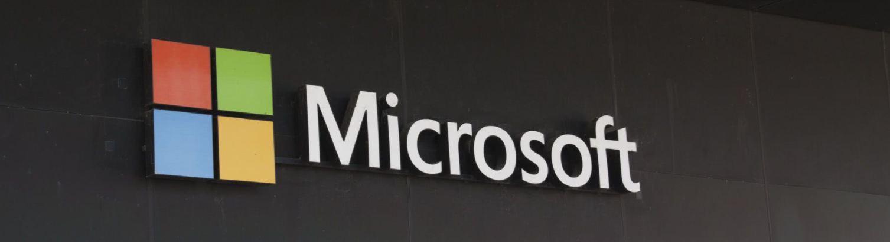

Sina science and technology news in the early morning of September 1, Beijing time, Microsoft officially announced that windows 11 will be officially launched on October 5. From October 5, 2021 to 2022, windows 11 will be upgraded in a phased and evaluable form. From October 5, qualified windows 10pcs will be upgraded to windows 11 for free, and various new PC devices pre installed with windows 11 will also be on sale.
On June 24 this year, Microsoft announced windows 11 as the successor to windows 10, and provided windows 11 (beta) to testers who registered the windows insider program four days later. Since then, Microsoft has launched seven incremental updates, including feature changes and bug fixes.
Now, Microsoft is ready to provide more customers with the final version of windows 11 and let device manufacturers start selling new PCs running the operating system. For the current PC, Microsoft expects that by the middle of 2022, all devices that meet the requirements of windows 11 will be upgraded free of charge.
Highlights of windows 11
The new design and sound are more modern. With the performance of cloud and Microsoft 365, the start menu will show users the documents they have recently viewed on various devices.
Chat based on Microsoft teams technology is integrated into the taskbar.
Widgets is an AI driven personalized prompt function, which provides a faster way to obtain the information you care about.

Windows 11 provides a new windows PC game experience. With technologies such as direct X12 ultimate, direct storage and auto HDR, it can give full play to the potential of system hardware. With Xbox game passfor PC or Xbox game pass ultimate, players can play more than 100 excellent PC games on Windows 11 (Xbox gamepass is sold separately) by paying a certain subscription fee.
Windows 11 has brought a new Microsoft Store. In the next few months, Microsoft will continue to bring Android applications to windows 11 and Microsoft Store through cooperation with Amazon and Intel. This feature will first launch a preview version for windows preview experience members.
Enterprise users can also test the preview version of windows 11 in advance in azure virtual desktop, or fully experience the experience of using Windows 11 in the new windows 365.
Push the free upgrade of windows 11 in a phased and evaluable form

Windows 11 will start free upgrade on October 5. In order to ensure the upgrade effect, Microsoft will carry out phased and evaluable upgrade. It will push the upgrade of existing devices in the market in stages according to hardware conditions, reliability, service time and other factors that will affect the use experience after the upgrade. It is expected that by mid-2022, all eligible devices can be upgraded to windows 11 for free. If you have a Windows 10pc that meets the upgrade criteria, windows update will notify you when you can upgrade. You can also enter Settings > windows update and select check for updates to see if your device can be upgraded to windows 11.
Are you ready to upgrade to windows 11?
Microsoft is about to re release the PC health check application to check whether the current PC meets the upgrade conditions.
If you are preparing to upgrade windows 11 and have never used onedrive, you might as well try it. Onedrive secures files and makes it easier to transfer them when upgrading your system or replacing new devices.
For organizations managed by the IT department, Microsoft today announced a new feature of Microsoft endpoint manager, which can help evaluate the company's readiness for windows 11 and large-scale mixed office. You can learn more in the Microsoft endpointmanager technology community blog.
Windows 10 is still the right choice for PC users who cannot upgrade or are not ready to transition to new devices. Microsoft will support Windows 10 until October 14, 2025.